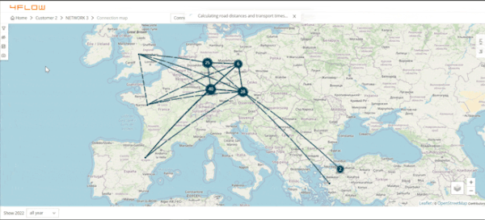
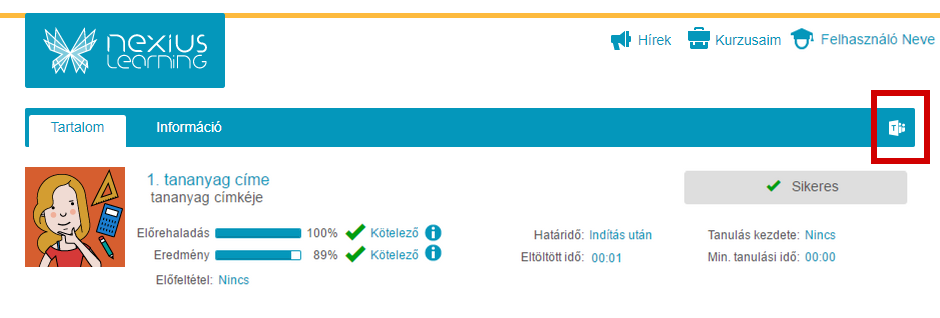
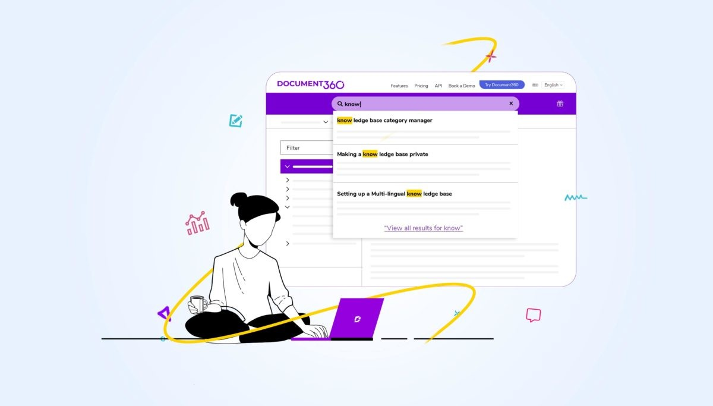

01
4Flow
4flow VIA helps supply chain planners, analysts, and consultants gain a
better understanding of supply chain networks, enabling them to react
quickly to changes and identify potential improvements. I contribute to
this project as a Full Stack developer using Angular and Spring Boot
frameworks.
02
Nexius Learning
Nexius Learning helps teachers and organizations create interactive
educational content. I contributed to this project as a Frontend
Developer using the Angular ecosystem.


03
IBM
IBM Blue Expertise, an internal HR application, helps find employees
based on their skillset. My responsibility in this project, was to
maintain and deliver new features as a Java Developer.